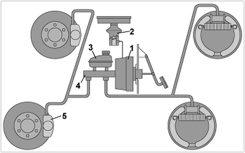

<!DOCTYPE html>
<html lang="hu">
<head>
    <meta charset="UTF-8" />
    <meta name="viewport" content="width=device-width, initial-scale=1.0" />
    <title>Fékrendszerek funkció – „C” kategória - Szerkezeti és üzemeltetési ismeretek</title>
    <meta property="og:site_name" content="KRESZ teszt &ndash; „C” kategória - Szerkezeti és üzemeltetési ismeretek" />
    <meta property="og:description" content="Fékrendszerek funkció kérdések és helyes válaszok („C” kategória - Szerkezeti és üzemeltetési ismeretek)" />
    <link rel="stylesheet" href="../test.css" />
</head>
<body>
    <div class="topic-header">
        <nav class="topic-breadcrumbs">
            <a href="index.html" class="crumb-link">&laquo; „C” kategória - Szerkezeti és üzemeltetési ismeretek témakörei</a>
            <span class="crumb-sep">/</span>
            <span class="crumb-current">Fékrendszerek funkció</span>
            <span class="crumb-sep">/</span>
            <a href="../../index.html" class="crumb-home">Interaktív teszt &raquo;</a>
        </nav>

        <div class="topic-title-section">
            <span class="topic-badge">Témakör 18 / 24</span>
            <h2>Fékrendszerek funkció <small class="topic-badge-info">(24 kérdés, vizsgán: üzemi, biztonsági, rögzítő, lassító stb.) és felépítés szerint (hidraulikus, légfék, EBS, kombinált stb.), fékelőírások                    (1 db., 1 pont)</small></h2>
        </div>

        <div class="topic-nav-bar">
            <a href="group-1668681669.html" class="nav-btn nav-prev-btn" title="Kerékfelfüggesztés, rugózás, lengéscsillapítás, emelés-süllyesztés">&laquo; Előző témakör</a>
            <a href="index.html" class="nav-btn nav-hub-btn">Témakörök listája</a>
            <a href="group-1668681827.html" class="nav-btn nav-next-btn" title="Sűrített levegő ellátó rendszerek, víztelenítés">Következő témakör &raquo;</a>
        </div>
    </div>

    <div class="group" id="group-1668681703">
        <div class="questions">
            <div class="question" id="question-704442">
                                                                            <div class="exercise-image">
                                
                            </div>
                                                <!-- <h4>438. Az ábrán bemutatott légfékberendezés...</h4> -->
                        <dl>
                            <dt>438. Az ábrán bemutatott légfékberendezés... <a href="#question-704442"><small>#704442</small></a></dt>
                                                            <dd class="correct">kétkörös.</dd>
                                                            <dd class="">egykörös.</dd>
                                                            <dd class="">háromkörös.</dd>
                                                    </dl>
                    </div>
                                                            <div class="question" id="question-704465">
                                                                        <!-- <h4>439. Befolyásolja-e a járművekre előírt fékezési követelményeket a jármű terhelési állapota?</h4> -->
                        <dl>
                            <dt>439. Befolyásolja-e a járművekre előírt fékezési követelményeket a jármű terhelési állapota? <a href="#question-704465"><small>#704465</small></a></dt>
                                                            <dd class="correct">Nem.</dd>
                                                            <dd class="">Igen, a teljes terhelésű járművek esetében a követelmények enyhébbek.</dd>
                                                            <dd class="">Igen, a teljes terhelésű járművek esetében a követelmények szigorúbbak.</dd>
                                                            <dd class="">Igen, a részterhelésű járművek esetében a követelmények enyhébbek.</dd>
                                                    </dl>
                    </div>
                                                            <div class="question" id="question-704476">
                                                                        <!-- <h4>440. A gépjárművek üzemi fékrendszerének...</h4> -->
                        <dl>
                            <dt>440. A gépjárművek üzemi fékrendszerének... <a href="#question-704476"><small>#704476</small></a></dt>
                                                            <dd class="correct">az összes kereket fékeznie kell.</dd>
                                                            <dd class="">elegendő a jármű első kerekeit fékeznie.</dd>
                                                            <dd class="">elegendő a jármű hátsó kerekeit fékeznie.</dd>
                                                            <dd class="">elegendő egy tengely kerekeit fékeznie.</dd>
                                                    </dl>
                    </div>
                                                            <div class="question" id="question-704480">
                                                                        <!-- <h4>441. A kerekekre ható biztonsági fékberendezés képes arra, hogy...</h4> -->
                        <dl>
                            <dt>441. A kerekekre ható biztonsági fékberendezés képes arra, hogy... <a href="#question-704480"><small>#704480</small></a></dt>
                                                            <dd class="correct">a gépkocsit az üzemi fékberendezés üzemzavara esetén is biztonsággal megállítsa.</dd>
                                                            <dd class="">a gépkocsit váratlan akadály felbukkanásakor automatikusan lefékezze.</dd>
                                                            <dd class="">a gépkocsit a vezető rosszulléte esetén megállítsa.</dd>
                                                    </dl>
                    </div>
                                                            <div class="question" id="question-704482">
                                                                        <!-- <h4>442. A megfelelően működő légfékberendezés működési késedelme nem lehet nagyobb, mint...</h4> -->
                        <dl>
                            <dt>442. A megfelelően működő légfékberendezés működési késedelme nem lehet nagyobb, mint... <a href="#question-704482"><small>#704482</small></a></dt>
                                                            <dd class="correct">0,6 s.</dd>
                                                            <dd class="">0,2 s.</dd>
                                                            <dd class="">1 s.</dd>
                                                            <dd class="">2 s.</dd>
                                                    </dl>
                    </div>
                                                            <div class="question" id="question-704483">
                                                                        <!-- <h4>443. A rögzítőfék rendszernek képesnek kell lennie a gépjárművet...</h4> -->
                        <dl>
                            <dt>443. A rögzítőfék rendszernek képesnek kell lennie a gépjárművet... <a href="#question-704483"><small>#704483</small></a></dt>
                                                            <dd class="correct">18%-os lejtőn vagy emelkedőn rögzíteni.</dd>
                                                            <dd class="">20%-os lejtőn vagy emelkedőn rögzíteni.</dd>
                                                            <dd class="">12%-os lejtőn vagy emelkedőn rögzíteni.</dd>
                                                            <dd class="">5%-os lejtőn vagy emelkedőn rögzíteni.</dd>
                                                    </dl>
                    </div>
                                                            <div class="question" id="question-704491">
                                                                            <div class="exercise-image">
                                
                            </div>
                                                <!-- <h4>444. Melyik fékberendezés rendszervázlata ismerhető fel az ábrán?</h4> -->
                        <dl>
                            <dt>444. Melyik fékberendezés rendszervázlata ismerhető fel az ábrán? <a href="#question-704491"><small>#704491</small></a></dt>
                                                            <dd class="correct">A kétkörös, kombinált, sűrített levegővel működtetett hidraulikus fékrendszeré.</dd>
                                                            <dd class="">A kétkörös légfékrendszeré.</dd>
                                                            <dd class="">A kétkörös hidraulikus fékrendszeré.</dd>
                                                            <dd class="">A sűrített levegős rásegítésű kétkörös hidraulikus fékrendszeré.</dd>
                                                    </dl>
                    </div>
                                                            <div class="question" id="question-704512">
                                                                            <div class="exercise-image">
                                
                            </div>
                                                <!-- <h4>445. Milyen kialakítású fékberendezés ismerhető fel az ábrán?</h4> -->
                        <dl>
                            <dt>445. Milyen kialakítású fékberendezés ismerhető fel az ábrán? <a href="#question-704512"><small>#704512</small></a></dt>
                                                            <dd class="correct">Kétkörös, hidraulikus fékrendszer, elöl tárcsa-, hátul dobfékekkel.</dd>
                                                            <dd class="">Egykörös, hidraulikus fékrendszer, elöl-hátul dobfékekkel.</dd>
                                                            <dd class="">Kétkörös, hidraulikus fékrendszer, elöl-hátul tárcsafékekkel.</dd>
                                                            <dd class="">Kétkörös, hidraulikus fékrendszer, elöl-hátul dobfékekkel.</dd>
                                                    </dl>
                    </div>
                                                            <div class="question" id="question-704526">
                                                                        <!-- <h4>446. Mekkora késedelemmel működik a hidraulikus fékberendezés?</h4> -->
                        <dl>
                            <dt>446. Mekkora késedelemmel működik a hidraulikus fékberendezés? <a href="#question-704526"><small>#704526</small></a></dt>
                                                            <dd class="correct">Kb. 0,2 s.</dd>
                                                            <dd class="">Kb. 0,5 s.</dd>
                                                            <dd class="">Kb. 0,8 s.</dd>
                                                            <dd class="">Kb. 1-1,15 s.</dd>
                                                    </dl>
                    </div>
                                                            <div class="question" id="question-704527">
                                                                            <div class="exercise-image">
                                
                            </div>
                                                <!-- <h4>447. Melyik a főfékhenger, illetve a vákuumos fékrásegítő az ábrán látható fékrendszerben?</h4> -->
                        <dl>
                            <dt>447. Melyik a főfékhenger, illetve a vákuumos fékrásegítő az ábrán látható fékrendszerben? <a href="#question-704527"><small>#704527</small></a></dt>
                                                            <dd class="correct">Az 1-es jelű a fékrásegítő, a 4-es a főfékhenger.</dd>
                                                            <dd class="">A 2-es jelű a fékrásegítő, a 3-as a főfékhenger.</dd>
                                                            <dd class="">A 3-as jelű a fékrásegítő, a 4-es a főfékhenger.</dd>
                                                            <dd class="">Az 5-ös jelű a fékrásegítő, a 4-es a főfékhenger.</dd>
                                                    </dl>
                    </div>
                                                            <div class="question" id="question-704530">
                                                                        <!-- <h4>448. Mi a vákuumos fékrásegítő feladata egy hidraulikus fékrendszerben?</h4> -->
                        <dl>
                            <dt>448. Mi a vákuumos fékrásegítő feladata egy hidraulikus fékrendszerben? <a href="#question-704530"><small>#704530</small></a></dt>
                                                            <dd class="correct">Fékezés esetén növeli a fékezőerőt, ezért a fékpedálra csak kisebb nyomóerőt kell gyakorolni.</dd>
                                                            <dd class="">Csökkenti a fékrendszer alkatrészeinek igénybevételét.</dd>
                                                            <dd class="">A biztonsági fékrendszer funkcióját tölti be, akkor lép működésbe, ha az üzemifék-rendszer meghibásodik.</dd>
                                                            <dd class="">A rögzítő fékrendszer funkcióját látja el.</dd>
                                                    </dl>
                    </div>
                                                            <div class="question" id="question-704533">
                                                                        <!-- <h4>449. Miért építik a korszerű haszongépjárművek légfékberendezését két üzemifék-körös kivitelben?</h4> -->
                        <dl>
                            <dt>449. Miért építik a korszerű haszongépjárművek légfékberendezését két üzemifék-körös kivitelben? <a href="#question-704533"><small>#704533</small></a></dt>
                                                            <dd class="correct">Mert ha az egyik fékkör meghibásodik, akkor a másikkal a gépjármű még fékezhető marad.</dd>
                                                            <dd class="">Mert így az egyik fékkörrel a vontató, a másikkal a pótkocsi kerékfékei működtethetők.</dd>
                                                            <dd class="">Mert így az első és hátsó tengelyeken különböző fékerők valósíthatók meg.</dd>
                                                            <dd class="">Mert így az üzemi és a rögzítőfék rendszer függetleníthető egymástól.</dd>
                                                    </dl>
                    </div>
                                                            <div class="question" id="question-704726">
                                                                            <div class="exercise-image">
                                
                            </div>
                                                <!-- <h4>450. Az ábrán látható hidraulikus fékberendezésen...</h4> -->
                        <dl>
                            <dt>450. Az ábrán látható hidraulikus fékberendezésen... <a href="#question-704726"><small>#704726</small></a></dt>
                                                            <dd class="correct">az 1-es a fékfolyadék tartály, a 3-as a dobfékszerkezet munkahengere.</dd>
                                                            <dd class="">a 2-es a fékrásegítő, a 4-es a dobfékszerkezet munkahengere.</dd>
                                                            <dd class="">az 1-es a hidraulika tartály, a 4-es a főfékhenger.</dd>
                                                            <dd class="">a 3-as a tárcsafék munkahengere, a 4-es pedig a dobféké.</dd>
                                                    </dl>
                    </div>
                                                            <div class="question" id="question-704863">
                                                                        <!-- <h4>451. Milyen legyen az üzemi fékrendszer fékhatása?</h4> -->
                        <dl>
                            <dt>451. Milyen legyen az üzemi fékrendszer fékhatása? <a href="#question-704863"><small>#704863</small></a></dt>
                                                            <dd class="correct">A fékhatásnak a kétoldali kerekeken megközelítőleg azonosnak kell lennie.</dd>
                                                            <dd class="">A fékhatásnak minden keréken azonosnak kell lennie.</dd>
                                                            <dd class="">A fékhatásnak minden tengelyen azonosnak kell lennie.</dd>
                                                            <dd class="">A fékhatásnak a kormányzott kerekeken kell a legkisebbnek, a hajtott kerekeken pedig a legnagyobbnak lennie</dd>
                                                    </dl>
                    </div>
                                                            <div class="question" id="question-704864">
                                                                        <!-- <h4>452. Milyen fékrendszerrel kell ellátni a gépkocsikat?</h4> -->
                        <dl>
                            <dt>452. Milyen fékrendszerrel kell ellátni a gépkocsikat? <a href="#question-704864"><small>#704864</small></a></dt>
                                                            <dd class="correct">Üzemi-, biztonsági- és rögzítő fékrendszerrel.</dd>
                                                            <dd class="">Üzemi-, biztonsági- és tartósfék fékrendszerrel.</dd>
                                                            <dd class="">Üzemi- és rögzítő fékrendszerrel.</dd>
                                                            <dd class="">Üzemi-, rögzítő- és tartósfék fékrendszerrel.</dd>
                                                    </dl>
                    </div>
                                                            <div class="question" id="question-704865">
                                                                        <!-- <h4>453. Milyen célt szolgál a gépjárművön (esetleg pótkocsin) alkalmazott tartósfék (lassítófék)?</h4> -->
                        <dl>
                            <dt>453. Milyen célt szolgál a gépjárművön (esetleg pótkocsin) alkalmazott tartósfék (lassítófék)? <a href="#question-704865"><small>#704865</small></a></dt>
                                                            <dd class="correct">Lehetővé teszi a járműnek hosszú lejtőn történő tartós, vagy gyakori fékezését a kerékfékszerkezetek túlmelegedése és kopása nélkül.</dd>
                                                            <dd class="">Az üzemi fék meghibásodása esetén lehetővé teszi a jármű lassítását és megállítását.</dd>
                                                            <dd class="">Megnöveli az üzemi fék fékhatását, mivel azzal párhuzamosan működtethető.</dd>
                                                            <dd class="">Ezzel végzik a jármű rögzítőfékezését, de lassításra is használható.</dd>
                                                    </dl>
                    </div>
                                                            <div class="question" id="question-704866">
                                                                        <!-- <h4>454. Mire kell alkalmasnak lennie a gépjármű biztonsági fékrendszerének?</h4> -->
                        <dl>
                            <dt>454. Mire kell alkalmasnak lennie a gépjármű biztonsági fékrendszerének? <a href="#question-704866"><small>#704866</small></a></dt>
                                                            <dd class="correct">Az üzemi fékrendszer üzemzavara esetén a járművet meg kell állítania a biztonsági fékezésre előírt hatásossággal.</dd>
                                                            <dd class="">A járművet elgurulás ellen meg kell tartania az előírt meredekségű lejtőn.</dd>
                                                            <dd class="">Alkalmasnak kell lennie a jármű tartós lassítására a fék hatásosságának csökkenése nélkül.</dd>
                                                    </dl>
                    </div>
                                                            <div class="question" id="question-704867">
                                                                        <!-- <h4>455. Mi az EBS (elektronikus fékrendszer) jellemzője?</h4> -->
                        <dl>
                            <dt>455. Mi az EBS (elektronikus fékrendszer) jellemzője? <a href="#question-704867"><small>#704867</small></a></dt>
                                                            <dd class="correct">Elektronikusan vezérelt légfékrendszer számos kiegészítő funkcióval.</dd>
                                                            <dd class="">Blokkolásgátlóval ellátott légfékrendszer.</dd>
                                                            <dd class="">Elektronikus, terhelésfüggő fékerőszabályozóval ellátott légfékrendszer.</dd>
                                                            <dd class="">Blokkolásgátlóval és kipörgésgátlóval ellátott fékrendszer.</dd>
                                                    </dl>
                    </div>
                                                            <div class="question" id="question-704877">
                                                                        <!-- <h4>456. Fel kell-e szerelni a rugóerőtárolós rögzítőféket olyan figyelmeztető berendezéssel, amely jelzi ha a munkahengerben a nyomás a rugó oldási nyomása alá csökken?</h4> -->
                        <dl>
                            <dt>456. Fel kell-e szerelni a rugóerőtárolós rögzítőféket olyan figyelmeztető berendezéssel, amely jelzi ha a munkahengerben a nyomás a rugó oldási nyomása alá csökken? <a href="#question-704877"><small>#704877</small></a></dt>
                                                            <dd class="correct">Igen.</dd>
                                                            <dd class="">Nem.</dd>
                                                    </dl>
                    </div>
                                                            <div class="question" id="question-714590">
                                                                        <!-- <h4>457. Kötelező-e gépjárművekre különálló biztonsági fékrendszert szerelni?</h4> -->
                        <dl>
                            <dt>457. Kötelező-e gépjárművekre különálló biztonsági fékrendszert szerelni? <a href="#question-714590"><small>#714590</small></a></dt>
                                                            <dd class="correct">Nem kötelező abban az esetben, ha üzemzavar esetén az üzemi fékberendezés vagy a rögzítőfék-berendezés kielégíti a biztonsági fékezésre előírt követelményeket.</dd>
                                                            <dd class="">Igen, minden gépkocsira.</dd>
                                                            <dd class="">Csak autóbuszok esetében kötelező.</dd>
                                                    </dl>
                    </div>
                                                            <div class="question" id="question-714591">
                                                                        <!-- <h4>458. Milyen fékezést kell az előírások szerint minden esetben, kötelezően lehetővé tenniük a gépjármű fékberendezéseinek?</h4> -->
                        <dl>
                            <dt>458. Milyen fékezést kell az előírások szerint minden esetben, kötelezően lehetővé tenniük a gépjármű fékberendezéseinek? <a href="#question-714591"><small>#714591</small></a></dt>
                                                            <dd class="correct">Üzemi, rögzítő és biztonsági fékezést.</dd>
                                                            <dd class="">Üzemi, tartós és biztonsági fékezést.</dd>
                                                            <dd class="">Üzemi, biztonsági és motorfékezést.</dd>
                                                            <dd class="">Rögzítő, biztonsági és motorfékezést.</dd>
                                                    </dl>
                    </div>
                                                            <div class="question" id="question-714592">
                                                                            <div class="exercise-image">
                                
                            </div>
                                                <!-- <h4>459. Milyen fékrendszer látható az alá"birajzon?�/hv> -->
  $ 0"!0�`(             <dl>
      $ 0"�  b     ! �  "0(a4et�4%; �ylyen fékrendszer látható az alÁb�y rajzon? <a href9"3sumsTmon-714592".<3eal,>#!4}18'sMell></�><mdt>
( $        �  b           `        $ 0"       ` � b      <dd class="corrgc|#>Kétkörös, hidsa�lyius0n��orendszer.</dd>
     0 `(                                           `� b   �ddbclass="">AlacsonY ��om��sú$kӫtkörös légb��asendszer.</dd>
      " (!   " (!                         " (!            0 <dd sl {�="">Hidrawlajus fékrendszer sűrített leveg��0rásegítéssel.</dd>
   ! �               ( $                                   <dd class="">Sűrített levegő működtetésű hidraulik�s $ékrendqzms.</d�>
H                    " (! `             0 �( b      </dl>
        " (!        </div>
                        ( $               �8 $ 0 `(      ,d)~ class="ques4ioO" �l=@uuestion-714593">
( �  b                        ` �0  ( $   $0�0                     `  <div claws- exercicemamage">
                                
                            </div>
                                                <!-- <h4>460. Milyen fékrendszer látható az alábbi rajzon?</h4> -->
                        <dl>
                            <dt>460. Milyen fékrendszer látható az alábbi rajzon? <a href="#question-714593"><small>#714593</small></a></dt>
                                                            <dd class="correct">Kétkörös légfékrendszer.</dd>
                                                            <dd class="">Kétkörös hidraulikus fékrendszer vákuumos rásegítéssel.</dd>
                                                            <dd class="">Kétkörös hidraulilkus fékrendszer magasnyomású levegőrásegítéssel.</dd>
                                                            <dd class="">Kétkörös hidraulikus fékrendszer sűrített levegő működtetéssel.</dd>
                                                    </dl>
                    </div>
                                                            <div class="question" id="question-714594">
                                                                            <div class="exercise-image">
                                
                            </div>
                                                <!-- <h4>461. A rajzon látható fékrendszer...</h4> -->
                        <dl>
                            <dt>461. A rajzon látható fékrendszer... <a href="#question-714594"><small>#714594</small></a></dt>
                                                            <dd class="correct">kombinált, sűrített levegő működtetésű hidraulikus fékrendszer.</dd>
                                                            <dd class="">magasnyomású kétkörös légfékrendszer.</dd>
                                                            <dd class="">hidraulikus fékrendszer vákuumos rásegítéssel.</dd>
                                                            <dd class="">magasnyomású kétkörös hidraulikus fékrendszer.</dd>
                                                    </dl>
                    </div>
                                                            <div class="question" id="question-721161">
                                                                        <!-- <h4>462. Az üzemi fékberendezés akkor megfelelő, ...</h4> -->
                        <dl>
                            <dt>462. Az üzemi fékberendezés akkor megfelelő, ... <a href="#question-721161"><small>#721161</small></a></dt>
                                                            <dd class="correct">ha a fékhatás egy tengely kétoldali kerekein közel azonos, és a jármű fékezés közben nem tér el a menetiránytól.</dd>
                                                            <dd class="">ha minden keréken teljesen megegyező fékhatást fejt ki.</dd>
                                                            <dd class="">ha a fékhatás a mellső kerekeken legalább kétszer akkora, mint a hátsókon.</dd>
                                                            <dd class="">ha minden tengelyen teljesen megegyező fékhatást fejt ki.</dd>
                                                    </dl>
                    </div>
                                    </div>
        </div>
    </div>

    <div class="topic-footer-nav" style="margin-top: 40px;">
        <div class="topic-nav-bar">
            <a href="group-1668681669.html" class="nav-btn nav-prev-btn" title="Kerékfelfüggesztés, rugózás, lengéscsillapítás, emelés-süllyesztés">&laquo; Előző témakör</a>
            <a href="index.html" class="nav-btn nav-hub-btn">Témakörök listája</a>
            <a href="#top" class="nav-btn nav-top-btn" onclick="window.scrollTo({top:0,behavior:'smooth'}); return false;">^ Tetejére</a>
            <a href="group-1668681827.html" class="nav-btn nav-next-btn" title="Sűrített levegő ellátó rendszerek, víztelenítés">Következő témakör &raquo;</a>
        </div>
        <p style="margin-top: 24px; text-align: center;"><a href="index.html" class="back-btn"><strong>&laquo; Vissza a „C” kategória - Szerkezeti és üzemeltetési ismeretek témaköreihez</strong></a></p>
    </div>

    <script src="../search.js"></script>
</body>
</html>